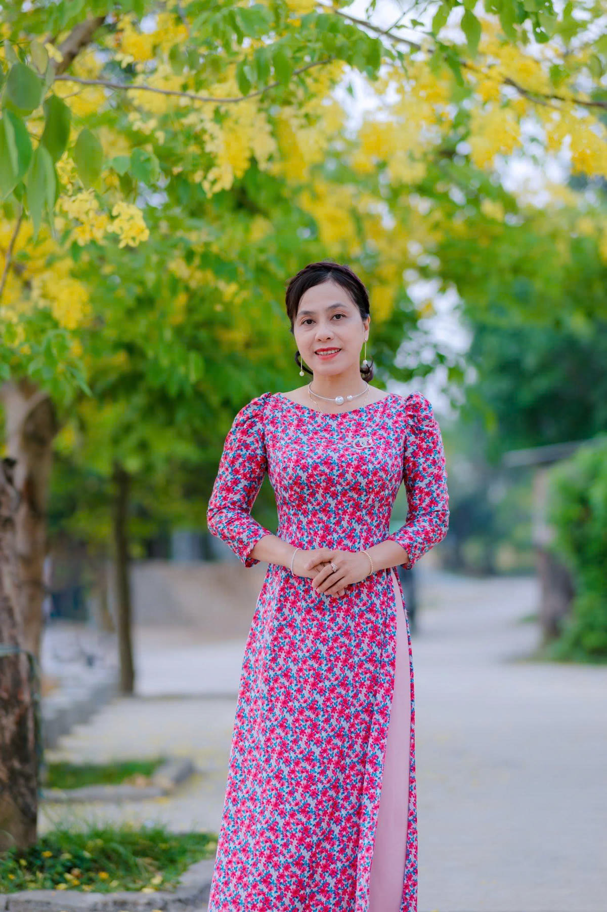

Giáo viên · Huế
Trần
Cẩm Huyền
Ba mươi năm đứng lớp ở một ngôi trường tiểu học xứ Huế, và rất nhiều bài hát còn ở lại với học trò.
- Thâm niên
- 30 năm
- Nơi công tác
- Trường Tiểu học số 2 Hương Vinh

Khúc dạo đầu
Ba mươi năm, một nhịp rất đều
Có những người chọn nghề, và có những người để nghề chọn mình. Ba mươi năm trước, cô Cẩm Huyền bước vào lớp học với một tà áo dài và một giọng hát. Lúc ấy chắc cô cũng chưa biết rằng sân trường này sẽ trở thành nơi cô gắn bó gần trọn một đời người.
Học trò đến rồi đi theo từng mùa phượng. Có em lúc đầu chẳng dám cất tiếng, cô kiên nhẫn hát cùng em từng câu, cho đến khi tiếng em vang lên cả lớp. Có em nay đã làm cha làm mẹ, về trường vẫn đứng lại trước cửa lớp cũ, và vẫn nhớ bài hát ngày nào.
Ở Huế, người ta nói năng nhỏ nhẹ, và cô dạy hát cũng vậy: không vội, không gắt, chỉ lặp lại một câu thật nhiều lần cho đến khi cả lớp cùng hát đúng. Sự nhẫn nại ấy, cô giữ suốt ba mươi năm.
Một tiết học rồi cũng hết. Nhưng một giai điệu được dạy bằng tình thương thì ở lại rất lâu.
- 30
- mùa tựu trường
- 30
- lần đón ngày 20 tháng 11
- 30
- mùa phượng tiễn học trò
Khúc thứ nhất
Lớp học
Ở trường, người ta dễ nhận ra cô: tà áo dài giữa sân, và quanh cô lúc nào cũng có học trò.
Khúc thứ hai
Sân khấu
Ra khỏi lớp học, cô vẫn hát. Ở những buổi lễ của trường, của phường, tà áo đỏ và giọng ca của cô là một phần quen thuộc với bà con nơi đây.
Trên sân khấu hay trước bảng đen, cô vẫn là một người: yêu âm nhạc và muốn chia sẻ tình yêu ấy với mọi người.
Khúc thứ ba
Huế của cô
Ngoài giờ lên lớp là những ngày áo dài, nón lá, và những con đường rợp bóng cây của đất cố đô.
Cô thích chụp ảnh ở những nơi quen thuộc: cổng Đại Nội, hàng cây trước sân trường, hành lang lớp học lúc vắng người. Mỗi tấm ảnh là một ngày bình yên giữa ba mươi năm bận rộn.
Vĩ thanh
Cảm ơn cô, vì tất cả những bài hát
Ba mươi năm là rất nhiều buổi sớm đến trường, rất nhiều lớp học trò lớn lên rồi đi xa. Trang này là một lời cảm ơn nhỏ, gửi đến cô từ những người đã may mắn được cô dạy hát, và từ gia đình luôn tự hào về cô.
Sau bao nhiêu năm, điều còn lại có lẽ không phải là một tiết học nào cụ thể. Đó là cảm giác được hát cùng bạn bè, được cô mỉm cười khen một câu, và biết rằng giọng hát của mình cũng có chỗ đứng trong lớp.
Trường Tiểu học số 2 Hương Vinh · Huế